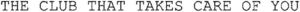

Trade Mark Journal No.2025/028 11 July 2025
WO0000001826108 (3,35)
Office of origin: France
Date of International Registration:1 August 2024
Date of designation in the UK:
1 August 2024

International priority date claimed: 22 February 2024
(France)
(5032811)
- Class 3
- Cosmetic products; cosmetic products for skin care; moisturizing products for cosmetic use; cosmetics for animals; perfumes; eaux de toilette; oils for cosmetic use; make-up products; make-up removing products; body scrubs; cleansing products for the skin (face and body); nail care products.
- Class 35
- Advertising services to promote public awareness, in the following fields: self-confidence and self-esteem, prevention of discrimination and harassment, mental health of people in need; advertising and marketing services provided via social media, in relation to the following fields: cosmetic and beauty products as well as loyalty, incentive, fundraising and related bonus programs; organization of promotional events for charitable fundraising; promotional advertising of third-party goods and services via sponsorship agreements, social media, artists, influencer celebrities and trend creators; organization of promotional campaigns in relation to the following fields: self-confidence and self-esteem, prevention of discrimination and harassment, mental health of people in need; consumer information and consultancy services in the field of beauty products; promotional sponsorship of programs and services offered by third parties in the fields of self-confidence and self-esteem, prevention of discrimination and harassment, the mental health of people in need; sponsorship search; retail and wholesale service for cosmetics, cosmetics for skin care, moisturizers for cosmetic use, cosmetics for animals, perfumes, eaux de toilette, oils for cosmetic use, makeup, makeup removing products, body exfoliating scrubs, skin cleansers (face and body), nail care products.
L’Occitane International S.A.
Representative: Cam Trade Marks & IP Services, St John's Innovation Centre Cambridge CB4 0WS UNITED KINGDOM